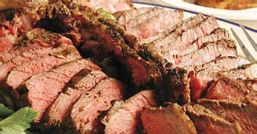

Steak with Grilled Fries

A superior steak for grilling needs to be an inch or more thick to provide the right combination of seared surface and juicy interior.
Ingredients
- Steak:
- 1 (2-pound) porterhouse steak (about 1 1/2 inches thick)
- 2 tablespoons Worcestershire sauce
- 1 teaspoon sea or kosher salt
- 1 teaspoon coarsely ground black pepper
- Cooking spray
- 1 teaspoon unsalted butter, softened
- Fries:
- 1 teaspoon sea or kosher salt
- 2 teaspoons paprika
- 1 teaspoon coarsely ground black pepper
- ½ teaspoon garlic powder/li>
- ½ teaspoon onion powder
- ½ teaspoon chili powder
- 1 teaspoon olive oil
- 2 medium baking potatoes, each cut into 12 wedges (about 1 1/2 pounds)
- 2 medium sweet potatoes, each cut into 12 wedges (about 1 1/2 pounds)
Directions
- To prepare steak, coat porterhouse steak with Worcestershire. Cover and marinate steak in refrigerator 30 minutes, turning occasionally./li>
- Prepare grill with one side on medium heat and one side on high heat.
- Remove steak from Worcestershire; discard Worcestershire. Sprinkle steak with 1 teaspoon salt and 1 teaspoon pepper; let stand at room temperature 15 minutes. Place steak on grill rack coated with cooking spray over high heat; grill 3 minutes on each side. Turn steak and place over medium heat; grill 3 minutes on each side or until desired degree of doneness. Place steak on a platter. Rub butter over top of steak; let stand 10 minutes
- To prepare fries, combine 1 teaspoon salt, paprika, 1 teaspoon pepper, garlic powder, onion powder, and chili powder. Combine oil and potatoes in a large bowl, tossing to coat. Sprinkle potatoes with paprika mixture; toss gently to coat.
- Place potatoes on grill rack coated with cooking spray over medium heat; grill 18 minutes or until sweet potatoes are tender, turning occasionally. Remove sweet potatoes; keep warm. Grill baking potatoes an additional 6 minutes or until tender.